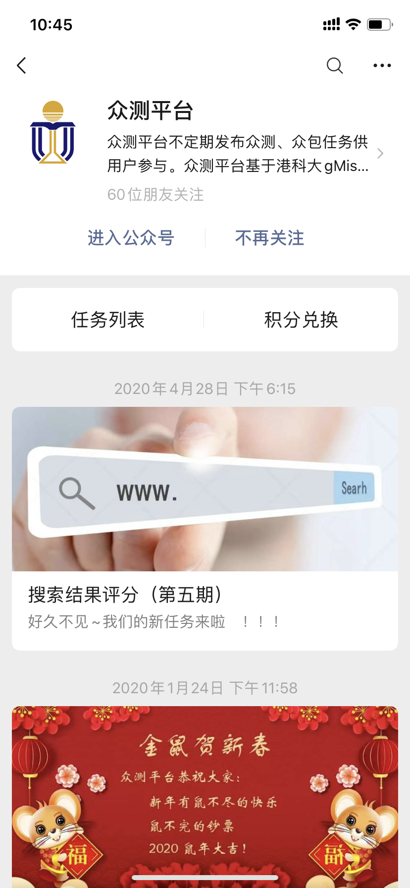
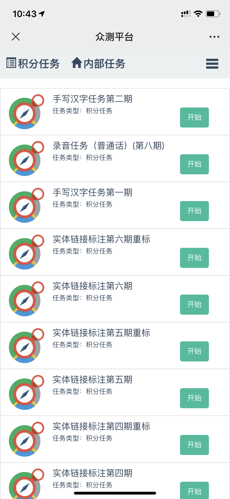

Wechat Crowdsourcing Platform
Wechat Crowdsourcing Platform is a product from the research collaboration of HKUST and Wechat. gMission provides the product prototype and task assignment algorithms for the Platform. Various kinds of crowdsourcing tasks are published on the Platform for wechat users to participant. HKUST researchers and Wechat developers can use it for data collection and labelling. Since its initial public release at summer 2017, more than 1000 task campaigns with 2 million tasks have been completed on the Platform and ~2000 Wechat users have participated and submitted answers. For more information, please scan the QR code below with Wechat.
Screenshots of the Platform:
 